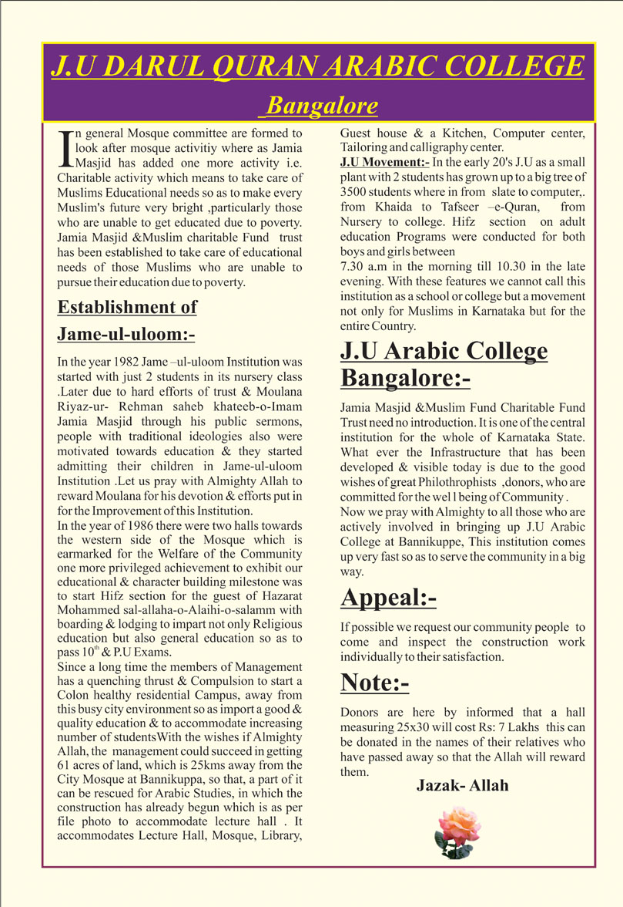
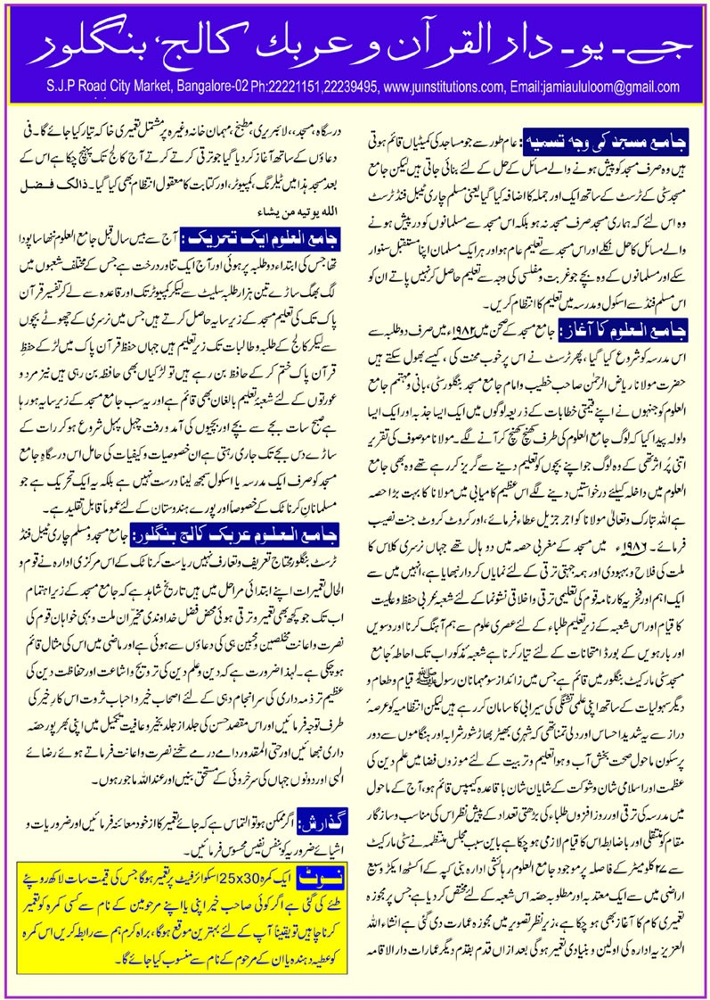

Home / About Us
Services
The services of the Jamia Masjid & Muslim Charitable Fund Trust, as described in its English and Urdu service documents.
Educational Services
Fourteen institutions spanning nursery, primary, high school, Pre-University, B.Com, BCA, ITI vocational trades, and computer training.
View institutions →Moral & Religious Instruction
A daily Arabic period from L.K.G. to PUC, a weekly Thursday ijtima for girl students, Shoba-e-Hifz, Shoba-e-Alimiyath and adult education arranged outside school hours.
Shoba-e-Alimiyath →Vocational Training
Tailoring School for Women, the Calligraphy Centre, the MMI-NCPUL Computer Centre and the Industrial Training Institute (ITI) at Shikshanagar.
Tailoring School →Charitable Activity
Care for the educational needs of Muslims unable to study because of poverty, as the Trust describes it.
Read the full text →
Services (English)
J.U Darul Quran Arabic College, Bangalore
In general Mosque committee are formed to look after mosque activity whereas Jamia Masjid has added one more activity i.e. Charitable activity which means to take care of Muslims Educational needs so as to make every Muslim’s future very bright, particularly those who are unable to get educated due to poverty. Jamia Masjid & Muslim Charitable Fund trust has been established to take care of educational needs of those Muslims who are unable to pursue their education due to poverty.
Establishment of Jame-ul-uloom
In the year 1982 Jame-ul-uloom Institution was started with just 2 students in its nursery class. Later due to hard efforts of trust & Moulana Riyaz-ur-Rehman saheb khateeb-o-Imam Jamia Masjid through his public sermons, people with traditional ideologies also were motivated towards education & they started admitting their children in Jame-ul-uloom Institution. Let us pray with Almighty Allah to reward Moulana for his devotion & efforts put in for the Improvement of this Institution.
In the year of 1986 there were two halls towards the western side of the Mosque which is earmarked for the Welfare of the Community one more privileged achievement to exhibit our educational & character building milestone was to start Hifz section for the guest of Hazarat Mohammed sal-allaha-o-Alaihi-o-salamm with boarding & lodging to impart not only Religious education but also general education so as to pass 10th & P.U Exams.
Since a long time the members of Management has a quenching thirst & Compulsion to start a healthy residential Campus, away from this busy city environment so as to impart a good & quality education & to accommodate increasing number of students. With the wishes of Almighty Allah, the management could succeed in getting 61 acres of land, which is 25kms away from the City Mosque at Bannikuppa, so that, a part of it can be rescued for Arabic Studies, in which the construction has already begun which is as per file photo to accommodate lecture hall. It accommodates Lecture Hall, Mosque, Library, Guest house & a Kitchen, Computer center, Tailoring and calligraphy center.
J.U Movement
In the early 20’s J.U as a small plant with 2 students has grown up to a big tree of 3500 students where in from slate to computer, from Khaida to Tafseer-e-Quran, from Nursery to college. Hifz section on adult education Programs were conducted for both boys and girls between 7.30 a.m in the morning till 10.30 in the late evening. With these features we cannot call this institution as a school or college but a movement not only for Muslims in Karnataka but for the entire Country.
J.U Arabic College Bangalore
Jamia Masjid & Muslim Fund Charitable Fund Trust need no introduction. It is one of the central institution for the whole of Karnataka State. What ever the Infrastructure that has been developed & visible today is due to the good wishes of great Philanthropists, donors, who are committed for the well being of Community.
Now we pray with Almighty to all those who are actively involved in bringing up J.U Arabic College at Bannikuppe. This institution comes up very fast so as to serve the community in a big way.
Appeal
If possible we request our community people to come and inspect the construction work individually to their satisfaction.
Note
Donors are hereby informed that a hall measuring 25x30 will cost Rs: 7 Lakhs; this can be donated in the names of their relatives who have passed away so that the Allah will reward them. Jazak-Allah

Dated appeal. This is the text of an undated printed page. The appeal, the donor note (“a hall measuring 25x30 will cost Rs: 7 Lakhs”) and the remark that construction “has already begun” describe the time it was written and are not a current request or statement of progress. This website does not invite donations and publishes no bank details; please contact the Trust office (Contact) for anything of that kind. Years and land figures are quoted as given on that page and differ from other pages of this website.
Services (Urdu)
The Urdu version of the page above, headed “J.U Darul Quran Arabic College, Bangalore”, shown as a scan. The activity calendar is on the Activities page.

See also the proposed building drawing on the Shoba-e-Alimiyath pages.